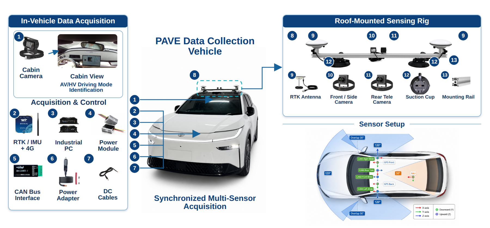
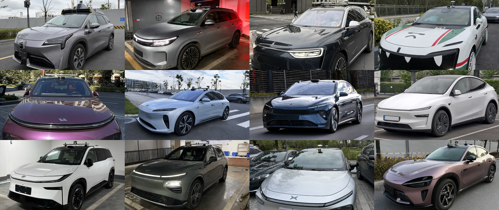
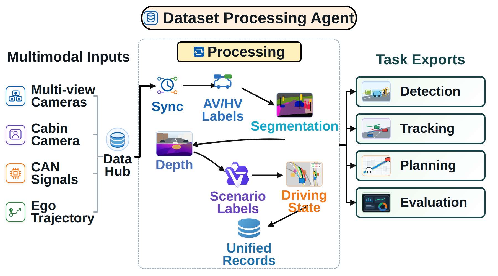

PAVE Dataset
Synchronized multimodal driving data with explicit autonomous and human-driven mode labels.
Ke’s Intelligent Transportation Exploration Lab
We develop real-world data, behavior models, and evaluation methods for production autonomous vehicles.

KITE Lab is a research laboratory in the Intelligent Transportation Thrust of the Systems Hub at The Hong Kong University of Science and Technology (Guangzhou). Established in 2025 and led by Dr. Ke Ma, the lab studies intelligent transportation systems and production autonomous vehicles.
We study production autonomous vehicles through data, evaluation, and simulation.
Synchronized multimodal driving data with explicit autonomous and human-driven mode labels.
Task-based, metric-based, and residual-based methods for analyzing production vehicle behavior.
Scaled environments, miniature vehicles, and UAV platforms for controlled and repeatable experiments.
PAVE is an end-to-end dataset for production autonomous vehicle evaluation, combining synchronized multimodal data with explicit AV/HV driving-mode labels.
Each record combines multi-view cameras, GNSS/RTK and IMU trajectories, CAN bus signals, and vehicle-state data.
Annotations cover driving modes, driving states, scenario conditions, traffic participants, facilities, 3D boxes, and lane information.




We evaluate PAV behavior through three complementary routes.
Validate scenarios and maneuvers.
Measure trajectory and motion.
Compare executed and reference behavior.
A controlled environment for repeatable validation, algorithm testing, and behavior diagnosis.
The sandbox connects scaled environments, miniature vehicles, and unmanned aerial vehicle platforms to complement real-world PAV analysis with scalable simulation experiments.

Li, Z., Meng, H., Ma, C., Ma, K., & Li, X. (2026). Transportation Research Part E: Logistics and Transportation Review, 209, 104740.
Liu, T., Ma, K., Liu, Y., & Li, X. (2026). Proceedings of the 2026 IEEE 29th International Conference on Intelligent Transportation Systems (ITSC).
Li, X., Wang, C., Liu, Y., He, D., Zhang, J., & Ma, K. (2026). Proceedings of the IEEE/CVF Conference on Computer Vision and Pattern Recognition (CVPR 2026), 1010–1018.
Ma, C., Zhou, H., Zhang, P., Ma, K., Shi, H., & Li, X. (2025). Communications in Transportation Research, 5, 100204.
Zhang, Y., Ma, K., Xu, Z., Zhou, H., Ma, C., & Li, X. (2025). Transportation Research Part B: Methodological, 200, 103316.

Lab Director · Assistant Professor
Dr. Ke Ma is a tenure-track Assistant Professor in the Intelligent Transportation Thrust of the Systems Hub at HKUST(GZ). He received his Ph.D. from the Connected and Autonomous Transportation Systems Laboratory at the University of Wisconsin–Madison.
His research focuses on Embodied Intelligence for Transportation and Physical AI, with emphasis on safety, stability, and evaluation.
Faculty Profile